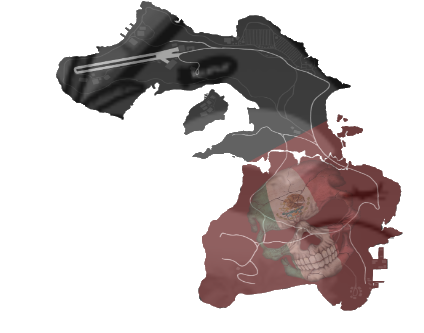

GDPR
- Hraním na serveru & využíváním discordu - Skylife RP, dáváte souhlas projektu SKYLIFE RP v souladu znění zákona č.101/2000 Sb. (Česká republika), o ochraně osobních údajů (dále jen “zákon o ochraně osobních údajů“) zpracovával tyto osobní údaje:
- Přezdívka z aplikace Discord e-mailová adresa informace poskytnuté internetovým prohlížečem a cookies (IP adresa, typ operačního systému apod.) Tyto údaje budou zpracované a uschované po dobu registrace uživatele. S výše uvedeným zpracováním udělujete svůj výslovný souhlas. Souhlas je možné vzít kdykoliv zpět a to např. odesláním na discord majitele.
-
Zpracováním údajů je vykonávané správcem, osobní údaje však pro správce mohou zpracovávat i tito zpracovatelé:
poskytovatel softwaru případně další poskytovatelé zpracovatelských softwarů, služeb a aplikací, které však v současné době projekt nevyužívá -
Berte na vědomí, že dle zákona o ochraně osobních údajů máte právo:
Vzít souhlas kdykoliv zpět požádat od nás informace jaké vaše osobní údaje zpracováváme požádat od nás vysvětlení ohledně zpracování osobních údajů vyžádat si u nás přístup k těmto údajům a nechat je aktualizovat nebo opravit vyžádat si od nás smazání těchto údajů v případě pochybností o dodržování povinností souvisejících se zpracováním osobních údajů se můžete obrátit na nás nebo na úřad pro ochranu osobních údajů.
Základní pravidla
- Hráči jsou povinni používat stejný herní nick jak na Steamu, tak na Discordu. První písmeno nicku musí být napsáno běžným fontem a nesmí obsahovat speciální znaky, které by ztěžovaly dohledání.
- Platí přísný zákaz obcházení veškerých trestů nebo dohod s AT (administrátorského týmu) a managementem projektu. Rozhodnutí AT je konečné a musí být vždy respektováno!
- Majitel účtu je plně zodpovědný za svůj herní účet a za veškeré škody, které jím mohou být způsobeny. Je přísně zakázáno propůjčování vašeho účtu.
- Nikdy neodcházejte od klávesnice, pokud se nacházíte v RP scéně. Pokud je to nezbytné, informujte spoluhráče v L-OOC chatu o přibližné době vašeho návratu nebo o tom, jak situaci zahrát.
- Hráči jsou povinni za všech okolností hrát role play a dodržovat charakter své postavy a loru, bez ohledu na aktuální počet online hráčů na serveru. I v tomto případě platí veškerá pravidla serveru, která musí hráči neustále dodržovat.
- Je zakázáno napadat ostatní hráče a jejich RP prostřednictvím komunikačních kanálů SKYLIFE, sociálních sítí nebo streamovacích platforem, pokud se nejedná o slušnou stížnost podanou prostřednictvím ticketového systému. Také je zakázáno provokovat a trollit hráče k vyvolání OOC šarvátek.
- Je zakázáno provokovat státní složky bez pádného RP důvodu. V případě, že budete nahlášeni za porušení tohoto pravidla, měli byste být schopni své důvody obhájit. Pokud máte pochybnosti, můžete předem požádat administrátora, aby vás spectoval a dohlížel na situaci.
- Je zakázáno využívat Bunnyhop (neustálé skákání) při běhu nebo jízdě na kole za účelem rychlejšího přesunu.
- Je zakázáno modování a jakékoliv podvádění, včetně využívání bugů.
- Veškeré bugy je nutné RPit, pokud nejsou ve váš prospěch.
Obecná pravidla
RP - Roleplay
- Herní styl, kde hráči hrají role fiktivních postav a interagují s ostatními hráči.
- Na serveru se používá Kalifornský zákoník s menšími úpravami.
IC (In Character)
- Ztvárnění postavy a veškeré situace, které nastávají, když hráč jedná za svou roli. Jednoduše řečeno, jde o všechno, co se odehrává v rámci roleplaye.
OOC (Out Of Character)
- OOC zahrnuje veškerou komunikaci, která probíhá mimo rámec roleplaye. Jedná se o situace, kdy hráč není v herním prostředí nebo nejedná za svou postavu.
- Konverzace na platformách jako Discord, v herním chatu apod.
- Vše, co probíhá mimo herní svět.
/me
- Když postava provádí nějakou akci, kterou nelze zobrazit animací ve hře.
- Příklad: /me bere z kapsy klíče a odemyká dveře.
/do
- Slouží k popisu činnosti, při které je potřeba další interakce s hráčem, k popisu situace nebo prostředí.
- V tomto příkazu je přísně zakázáno lhát.
- Příklad: /do Na zemi je vidět krvavá stopa, /do Ulice je kluzká a pokrytá ledem.
- V tomto příkazu je přísně zakázáno erpit /do za ostatní hráče.
/try
- Příkaz sloužící k náhodnému Ano/Ne.
- /do Podařilo se mu najít mobil? /try.
- Zákaz opakovaného používání /try, tak aby vyšlo ve váš prospěch.
- Je zakázáno využívat /try za účelem vyhnutí se pravdě.
- /do zastavilo se krvácení na hlavě? NE /do a teď? Ne /do Opravdu? Ano.
/doc
- Příkaz na odpočet délky činnosti.
- Používá se například po /do zašívá ránu /doc 10.
- Zbytečné zdržování v RP akci pomocí nesmyslně dlouhých /doc, může vést k trestu.
/stav
- Může následovat pouze výhradně po /me, /do a to z důvodu podání informace i ostatním hráčům RP.
- /stav má obvázané rameno.
/report
- Slouží ke kontaktování staffa, Při psaní reportu vždy psát důvod pro usnadnění AT teamu (z důvodu rozeznání, kdo má na report přijít).
NonRP Injuries
- Jedná se o povinnost RPit zranění své postavy.
- Je třeba se chovat adekvátně na základě zaRPených zranění.
- Hráč pokračuje ve hře, jako by nebyl zraněn, i když by v reálném světě musel například navštívit nemocnici.
- V případě deathscrennu způsobeným střelným zraněním je povinnost rpit střelné zranění a může rpit kulky ve vestě, pokud ji má fyzicky nasazenou.
- Příklady NonRP Injuries:
- Přísný zákaz bindování příkazů na zranění (injuries)
- /do bouchl se do hlavy při 200km jízdě, se počítá jako NonRP Injuries.
- Nabouráš do sloupu a následně pokračuješ v jízdě bez žádných Injuries.
“Je*l se - není adekvátní zarpení injuries, stejně tak “au”.. není adekvátní rpení injuries..
AssPulling
- Vytahování větších předmětů z inventáře nebo pomocí animací bez RP.
- Týká se však i dlouhých zbraní.
- /stav pp je zakázané, je potřeba rpit skrytou dlouhou přes EUP - batoh.
MetaGaming
- Používání informací, které byly získány mimo RP (OOC) a následně jsou použity ve hře (IC). Mezi metagaming se počítá také stream sniping, např. pokud informace získané při sledování streamera použijete v rámci IC.
- Mezi metagaming se počítá také veškerá komunikace během RP mimo samotnou hru, např. volání na discordu.
- Zákaz přenášení informací mezi postavami (multichar).
- Poznávání hráčů podle hlasu ve hře je přísně zakázáno.
- Například někdo napíše do chatu „Potřebujeme posily u banky“ a hráč, který není v blízkosti ani neslyšel žádnou komunikaci, se tam vydá.
- Mezi Metagaming se také počítá takzvaný “DC Panic”
FailRP
- FailRP zahrnuje jakékoli chování, které vybočuje z loru postavy nebo frakce, zahrnuje trolling v RP, nerespektování hierarchie ve frakci nebo jiné nelogické jednání v rámci IC, které narušuje plynulý a realistický průběh hry pro ostatní hráče.
- Náhodné hledání hráčů po mapě. Hledat je možné pouze v okolí místa, kde došlo k únosu tebe nebo členů tvé frakce.
- Jakékoliv zneužívání nebo bugování animací ve svůj prospěch není povoleno.
- Roleplayování českých nebo slavných jmen (např. František Krupička, Cristiano Ronaldo, Lionel Messi) je zakázáno.
- Je zakázáno sprejovat na frakční sídla, státní budovy a veřejná místa jako jsou např. hlavní garáže. Také je zakázáno používat česká slova při psaní textů.
- Transport hráčů po PK nereálnou formou (např. kolo, motorka a vozidlo neodpovídající počtu sedadel)
- Účelový camping NPC / lokalit pro nelegální činnosti (např. BM, garáž, drop atd.)
- Zákaz okrádání NPC v dopravním prostředku.
- Zákaz bezplatného tunění osobních aut v rámci mechanic joby, pokud budete zneužívat jobu mechanika za účelem okrádání firmy ve které pracujete, riskujete odebrání majetku a smazání postavy.
- Vydávání se za státní složky, veřejně známé osoby je přísně zakázáno.
- Tuning vrtulníků/letadel na pozemku dílny pro auta/motorky.
- Jakékoliv tunění zbraní na dopravní prostředky = 1 mesíc BAN, strike na frakci.
- Evidenční sáčky jsou jen pro státní ozbrojené složky a slouží jako uložiště pro zabavené věci, nikoli jako rozšíření inventáře nebo batoh pro další itemy, zneužívání sáčků se trestá, obcházení nosnosti vest a další se rovněž trestá.
V rámci FailRP je rovněž zakázáno:
Mixing
- Je využívání OOC informací do IC. (např. mám večeři hned jsem zpátky)
- Mezi mixing patří také IC vztah s dalšími hráči, které znáte na základě OOC..
- V žádném případě není možno mluvit OOC na serveru mimo tag.
- “Zapni boha” - Zapnutí tagu u staffa, “Použij očíčko” - Zmáčkni ALT a další podobné pojmy jsou považovány za mixing.
- Oslovování herní přezdívkou (Steam jméno, Discord jméno)
- ukládání kontaktů podle OOC jmen (Steam/Discord jméno…)
- Je zakázáno mít IC nick stejný jako OOC nick
Powergaming
- Jako powergaming se označuje vše, co neodpovídá reálnému světu.
- Powergaming se označuje i zaeRPění injuries v extrémně rychlém čase.
- Powergaming je považováno i nabindované injuries. (/me a /do)
- Zvedání nadměrně těžkých věcí (např. více než 900 tisíc dolaru v inventáři)
- eRPní BodyCamu bez EUP bodycamu a gopro.
- Nošení velkých množství zbraní nebo předmětů.
NonRP Driving
- Označuje jízdu, která není realistická nebo nesplňuje pravidla roleplaye.
- Let letadla / vrtulníku za nereálných podmínek a pravidel, počasí, vyhlášky a zákony o letectví.
Příklady:
- Jízda sportovním vozidlem na nezpevněném povrchu maximální rychlosti.
- Jízda s prostřelenou pneumatikou
- Jízda s nereálně poškozeným vozidlem
- Nereálné skoky s vozidly
- Let bez pilotního průkazů
- Let za špatného počasí
- Let nad městem pod 300ft (vyjma státních složek)
- Let v bezletové oblasti (např. vězení, armádní a vládní objekty)
- Přistání kdekoli mimo místa tomu určená (letiště, heliporty) vyjma státních složek
NonRP Acting
- Nereálné chování v IC
- Každá korupce musí být předem schválena v ticketu (Vztahuje se na všechny legální tak i nelegální frakce)
- Do korupce se počítá vše co je proti nařízení a kodexu nebo v neprospěch frakce, ve které jste. (vynášení informací, vykrádání skladů, ...)
- Korupci se nesmí využívat v prospěch svých multicharů. (Jsem v nelegálce, tak za korupční PD budu vysvobozovat členy z té nelegálky ve které jsem za druhý char).
Non Fear RP
- FearRP zahrnuje několik typů strachu, přičemž jeho podstatou je realistické ztvárnění strachu v dané situaci. Může jít například o strach ze ztráty života, zaměstnání, majetku nebo Hoodu.
- Jsou situace, kdy je možné jednat odvážně, avšak hráč musí být schopen své chování později odůvodnit v čekárně.
- Příkladem může být situace, kdy na hráče míří tři osoby a chtějí ho okrást. V tomto případě není na místě hrát si na hrdinu, ale spolupracovat kvůli obavě o svůj život.
- Toto pravidlo se vztahuje k NVL.
- Vztahuje se na místa, lidi, zbraně a situace.
- Pravidlo se vztahuje na Cop Baiting a jiném druhu vyhledávání PD/SD..
Příklad:
- Adekvátní reakce je zvednout ruce a vzdát se nebo rychlý únik v případě sezení ve vozidle.
Hood Fear
Pravidlo, které říká, že by měl jakýkoliv hráč respektovat členy hoodu (i pasivní členy - NPC) (neznamená to, že by nemohl něco udělat, ale měli by se přizpůsobit a projevovat strach, v případě jakékoliv akce se musí jednat o “rychlé realizování a následný odchod”).
Toto pravidlo platí pro policisty obzvlášť. Při vstupu na toto území by měli být v početnějších skupinách;menší počet neznamená porušení pravidla, ale spíše ukazuje, že gangsteři jednat s větší jistotou (přirozeně jejich strach klesá, ale úplně nemizí). Snažíme se vyhnout nečekaným raziím v gangu a hromadnému zatýkání kvůli podezření. RP by mělo mít smysl a nejít jen o bezmyšlenkovitou honičku.
Policie i civilisté by si měli být vědomi, že se jedná o území gangu, oblast s vlastní kulturou, kde jsou jakékoliv anomálie brány velmi negativně.
Animal Fear
- Každý musí RPit strach z toho, že by každé neznámé/cizí zvíře mohlo zaútočit
Jail Fear
- Postava by měla mít obavy z následků uvěznění, jako je ztráta reputace, odloučení od rodiny nebo přátel, nebo ztráta svobody, doživotí
- eRPit strach z vězení a vysokých trestů včetně JCK (doživotí)
Combat Log
- Odpojení se z probíhající RP akce, nebo těsně jak skončí.
- Odpojit, aby se nejednalo o CombatLog můžete nejdříve až 10min po poslední interakci s hráčem, kdy by Vaše odpojení ovlivnilo následující RP.
- Chytne tě Policie a ty to odpojíš ze hry.
- Někdo tě unese a ty to odpojíš..
Úmyslné vyhýbání se RP
VDM (Vehicle Deathmatch)
- Nereálné používání vozidel k zabíjení nebo zranění ostatních hráčů, aniž by to mělo logický důvod.
- Na ulici potkáš náhodnou osobu a jednoduše ji srazíš.
- Někoho stále pronásleduješ a nesmyslně do něj bouráš. (neplatí pokud se v rámci RP snanžíte zastavit vozidlo ).
RDM (Random Deathmatch) / Battlefield
- Hráč bezdůvodně a náhodně zabíjí ostatní hráče nebo NPC, aniž by to mělo jakýkoli roleplayový důvod nebo kontext.
- Je zakázáno zbytečně vyvolávat přestřelky nebo bezdůvodně střílet.
NVL (Not Valuing Your Life)
- Nevážení si vlastní postavy a jejího života.
- Za normálních okolností nepojedeš na místo, kde probíhá, např. přestřelka v obchodě, uzavřená oblast od státních složek, aktivní střelba.
- Nebo v případě, že jste na Mount Chilliadu, nevezmete motorku a nepojedete střemhlav dolu.
Trash RP
- Toxické chování nebo vyjadřování vůči ostatním hráčům.
- Zbytečné nadávání ostatním hráčům na serveru nebo na discordu včetně statusu.
- Opakované kazení RP akce hráčům na serveru.
- Griefing
Passive RP
- Celé město Los Santos má pár milionů obyvatel, Sandy Shores a Paleto Bay má zase menší desítky tisíc obyvatel a tyto města jsou považovány za passive, což znamená, že zde hrozí, že vás někdo nahlásí za trestnou činnost. Passive neznamená SAFE ZONE, a nelegální aktivity mohou probíhat po celé mapě, ale musí být v souladu s pravidly.
- Můžete unášet lidi v uličkách ale musíte mít stále na vědomí že jste v milionovém městě takže logicky nebudete unášet lidi vedle PDM nebo PD stanice.
- Po 22:00 můžete unést lidi i na plážích, ale stále musíte počítat s přítomností obyvatel a možností nahlášení.
- Pro PassiveRP je hráč povinen psát /911a nebo /911.
- Pasivně se ve městě nachází několik milionů lidí. (místních)
- Nejvyšší koncentrace je v centru, veřejných a státních budovách, dílnách a turistických oblastech.
- V okolí státních budov se vždy nachází několik místních strážníků, takže opravdu není dobrý nápad zde unášet lidi.
- Zabiješ na přehradě policistu a místo útěku čekáš aby si mohl zabít dalšího, který přijede.
- Nejvyšší koncentrace je v centru, veřejných budovách, v bankách, v dílnách, v turistických oblastech a ve státních budovách (EMS, LSPD, LSSD, FD, hlavní letiště, radnice, kasíno atd.)
Všechno mimo město není passive – mimo městské oblasti je možné provádět nelegální aktivity bez omezení
!!! Na našem Serveru neplatí Pravidlo Rychlé Akce !!!
Příklad:
Zabiješ na přehradě policistu a místo útěku čekáš, aby si mohl zabít dalšího který přijede
Cop Baiting
- Úmyslné provokování bezpečnostních státních složek.
Příklady:
Naschvál driftuješ a troubíš před PD hlídkou, narušuješ perimetr.
Opakovaná jízda kolem stanice.
PT (Peace Time)
- PT může být vyhlášen členem AT.
- PT je vždy když se na serveru nachází 0 PD/SD.
- PT je automaticky vyhlášen 30 min před a po restartu.
V tom čase se nemůžou dělat žádné nelegální RP činnost/akce.
Combat Comeback
- Jedná se o opětovné vrácení do RP po death screenu, které bylo Vaší přítomností jakkoliv ovlivněno.
- Je přísně zakázáno vrácení se do RP po PK, platí pro všechny včetně ozbrojených složek a EMS.
- Pokud v dané RP akci byl použit combat medic / EMS, které vás oživilo, je zapotřebí po ošetření na místě se přesunout na EMS / nelegální doktor / sídlo z důvodu doošetření.
- Po ošetření combat medic / EMS na místě se nelze vrátit do stejné RP akce za účelem střelby.
Safe-zony
- Zony: Kasíno, EMS, Autoškola, Hlavní garáže, Hlavní Ammunation, PDM, Hlavní letiště, Clothing shop v DT, Radnice / úřad práce, stanice státních složek.
- V safe-zónách je přísně zakázáno zabíjet nebo unášet osoby.
- Výjimkou je situace, kdy RP akce začala mimo Safe-zónu.
- Je zakázáno vyhýbat se RP útěkem do Safe-zony.
Gross RP
- Gross RP zahrnuje nevhodné, hrubé nebo extrémně nevkusné chování v rozporu s RP pravidly.
- Povolení k Gross RP se provádí pomocí /gross povolen? a /gross ano. Pro ukončení napište /gross stop.
- Trvalé následky (např. řezání částí těla) jsou zakázány bez předchozího souhlasu formou CK tiketu.
- Souhlas s Gross RP lze kdykoliv zrušit v L-OOC chatu pomocí stop Gross. Pokud vás unese jiná nelegální organizace a ví, že jste členem nelegálu, GrossRP je automaticky povolené.
- Pokud je Gross příliš nechutný, můžete požádat o jeho zmírnění, což musí protistrana respektovat.
- Při zapojení dalšího hráče do probíhající akce s aktivním gross je potřeba znovu schválit gross s novým členem (gross?), v případě odmítnutí se musí od probíhající akce odpojit.
- Jakékoliv sexualizované gross RP bez souhlasu hráčky je přísně zakázané. I v případě že se jedná o nelegal char.
Cheating
- Cheaty a modifikace klienta, které zvýhodňují hráče, jsou zakázány.Zakázané úpravy: odstranění textur stromů/keřů, úpravy zbraní, handlingu aut, kolizí, tracery, blood FX, konfety, počasí a denní doby.
- Grafické úpravy: PVP/FPS packy jsou povoleny, pokud nezahrnují odstranění textur.
- Makra a bindy: Jakákoliv makra a bindování /me a /do jsou zakázány (považováno za PowerGaming).
- Programy třetích stran jsou přísně zakázány.
- Tresty: Používání cheatů, hacků nebo přijímání věcí od cheatera nebo nenahlášení cheatera vede k permanentnímu banu.
- Zákaz používání VPN a jakákoliv změna originální IP providera.
Girl Hunting
- Girl hunting je definováno jako pronásledování nebo obtěžování hráček v herním prostředí kvůli jejich pohlaví..
- V případě jakéhokoliv IC obtěžování hráček je potřeba mít schválený gross. (Platí i v případě že jde o nelegál!)
ReversMeta
- Je zakázané informace, které víte OOC, tlačit do IC skrze /do, aby jste dostali přiznání či jiné informace od dané osoby.
G-Signál
- Signál první pomoci v případě PK
- Použití je povoleno pouze tehdy, pokud se v blízkosti nachází někdo další (hráči nebo NPC).
- Pokud uplyne 5 minut a stisknete "E" bez pasivního RP doktora nebo se nacházíte v RP akci, bude to trestáno banem..
Trash Talking
- Jakékoliv OOC hádky nebo hodnocení RP jiných hráčů v L-OOC je přísně zakázáno.
- Pravidlo zahrnuje i stížnosti na RP ostatních hráčů v LOOC.
- Porušení tohoto pravidla může vést k banu.
- Trash Talking zahrnuje také nadávky na A-T nebo server během streamů (platí pro komentáře hráčů i reakce streamera).
VIP Pravidlo
- za Zvířecí PED jakýkoliv pohyb po mapě bez svého páníčka / handlera, jakýkoliv pohyb v prostorách kam zvíře běžně nemůže se bere jako failRP.
Letecké Průkazy
- Hráči mohou používat letadla, ultralighty a helikoptéry pouze v případě, že mají platný letecký průkaz. V opačném případě je použití těchto prostředků zakázáno a považováno jako Fail RP. (Platí včetně ultraligt etc.)
Ninja jacking
- Bezdůvodné odcizení vozidla
PVP Pravidla
Zneužívání animací
- Platí přísný zákaz zneužívání animací pomoci např. Emotu /e prone (trestá se banem)
- Zákaz nabindovaných animací nebo příliš rychlé používání animací (platí včetně šipky nahoru a zopakovaní předešlého emotu/animace!)
- Vyjímka platí když si chcete třeba lehnout na střechu a až poté střílet na ostatní hráče (zákaz bugování se do střech pomocí emotu)
- /rag je zakázaný za účelem zkracování animaci a obecné zneužívání /rag pro svůj prospěch.
KOS (Kill On Sight)
- Zabití bez předešlé RP akce a bez dostatečného RP důvodu.
Příklad:
Zabijete náhodného hráče na ulici.
Looting
- Looting všech státních složek je přísně zakázán.
- Hráč nesmí vyvolat RP akci za účelem zabití a následného lootingu.
- Přísný zákaz najíždět na neutrální lokace jako je detektor kovu, hledání pokladu, horník za účelem lootu.
- Najíždění do podniků za účelem únosu, střelby a následného lootingu je zakázáno. V případě, že to bude dávat smysl je možné založit si ticket na schválení. (Viz. pravidlo Raidy)
- Pokud při únosu dáte unesenému PK/DS (bezvědomí) není možné si zapojit vlastní ošetření a požádat o revive.
- Na nelegálních lokacích není nutné aby před komunikací hráčů probíhala RP interakce takže se nejedná o Kos.
- Je zakázáno přijít k náhodnému autu a vzít všechno, co je uvnitř, pokud předtím neproběhla žádná interakce s hráčem.
- Je zakázáno okrádat náhodné mrtvé hráče o vše co mají u sebe.
- Zákaz okrádat zvířecí pedy.
CK (Character Kill)
- Character Kill (CK) znamená trvalou smrt postavy, při které hráč ztrácí majetek, informace a vztahy. Po CK je nutné vytvořit novou postavu.
- Všechna CK i Self CK se musí předem schvalovat A-Teamem skrze správně sepsaný Ticket společně s dostatečným RP důvodem.
- SelfCK nesmí narušit dlouhotrvající probíhající RP někoho jiného.
- CK Ticket si vždy zakládá osoba / skupina, která chce CK udělit
- Úspěšně udělené CK oznamuje osoba / skupina, která si o CK žádala.
- Po provedení CK se vždy zašle do ticketu klip / screen s provedením CK a přidá informace o tom, jak bylo s tělem dále zacházeno, např. jakým způsobem bylo tělo uklizeno.
- Oznámení CK: V chatu napište „CK – IC jméno a příjmení postavy“
- Hráč se po CK, může do stejné frakce vrátit nejdříve po 7 dnech a to na nejnižší pozici..
Situační CK
- Jedná se o CK vzniklé nepředvídatelnou situací. (Hráč musí se situačním CK sám souhlasit)
- Pokud si hráč rozhodl udělit situační CK, po proběhlé RP akci si založí ticket o Self-CK, na základě předešlé RP akce ideálně se screenem /klipem.
Příklad:
- Nabouráte do benzínky a ta s vámi vybouchne.
Majetkové CK
- Jedná se o smazání kompletního majetku hráče.
- Toto CK se uděluje za neoprávněné získání majetku, kupování majetku za OOC peníze jinde než skrze oficiální služby, zneužívání bugu za účelem zisku peněz atd.
Boss CK
- Boss nelegální frakce má právo udělit komukoliv z frakce CK.
- K provedení CK je potřeba mít pádný RP důvod a následně založený ticket Bossem frakce o provedeném CK
- CK může být uděleno za neaktivitu či opakované hrubé porušování interních pravidel frakce.
- Pokud se hráč bude schovávat před CK nebo se vyhýbat akcím, tak se automaticky CK schvaluje bez vaši přítomnosti.
PK (Player Kill) - Death Screen
- Systémové “zabití” vaší postavy, PK nastává pouze ve chvíli, kdy se ocitnete v death screenu..
- V případě PK je potřeba nechat se ošetřit EMS / Nelegálním doktorem / Combat medikem
- Pokud poblíž není nikdo kdo by Vám pomohl, smíte použít G singal, viz pravidlo G - Signal.
- Po PK je potřeba RPit následky svého poranění. (Střelná rána, bodnutí, pád atd.)
- Po oživení z PK trpí vaše postava ztrátou krátkodobé paměti na poslední události, matně si vzpomíná na střípky z událostí před PK. V případě napadení si matně vzpomíná na barvu pleti, barvu auta, pohlaví útočníka.
RP - PK
- Částečná ztráta paměti charakteru vlivem RP situace.
- Po RP - PK si vaše postava velmi matně vzpomíná na velmi obecné věci. (Barva pleti, barva auta, pohlaví, počet útočníků atd.)
- Určuje se na základě RP: v případě vysoké ztráty krve. (Určuje se na základě RP pomocí /me, /do, /dr)
- Server je WL-OFF, proto doporučujeme napsat do chatu "RP - PK" / "RP - PK - hráč"
V jaké situaci má Vaše postava RP-PK:
- Automaticky: při úderu tupým předmětem do hlavy. (Není třeba daného hráče nutně dávat do deathscreenu stačí /me,/do)
Full RP-PK
- Hráč si nic nepamatuje,trpí amnézií a začíná svůj život “znovu”, trvalá ztráta paměti.
- Při Full-RP-PK z důvodu dalšího vývoje RP, informujte AT v ticketu o CK. (například po full RP-PK by nemuselo být na vás schváleno CK)
- Hráč si o Full-RP-PK musí vždy zažádat formou ticketu a vyčkat na schválení, není možné jinému hráči Full-RP-PK nakázat.(Vyjímky se udělují na ticket.)
Revenge Kill
- Po PK není možné minimálně 6h uskutečnit revenge kill z důvodu částečné ztráty paměti a poranění.
Teleport Camping
- V Je zakázáno campit jakýkoliv teleport za účelem zisku informací, lootu nebo okamžitému únosu náhodného hráče.
Vykrádání
- Při „vykrádačce“ musí být menší počet zločinců jako PD/SD.
- Rukojmí nesmí být NPC a nesmí být domluveno předem.
- Rukojmí se nesmí připojit k vykrádajícím a nesmí je zvýhodnit.
- Maximální výkupné je $15.000 za rukojmího, u členů IZS až $25.000.
- 30 minut před a po restartu nelze začít vykrádačku.
- Při vykrádačce je nutné počkat na 1. hlídku a pokusit se o vyjednávání.
- Rukojmí musí být vždy přítomní, jinak je to porušení pravidel.
- Výjimky pro opuštění: obchody po 5 minutách, banky po 15 minutách, ostatní po 10 minutách.
- Zákaz campit na střechách nebo horách jako zločinec. Maximálně 6 zločinců mimo banku.
- Hlavní prioritou policistů musí být ochrana rukojmích – jejich zásahy nesmějí ohrozit životy nevinných lidí.
Přepadávání/Unášení
- Maximální doba únosu je 1 hodiny (IRL), samozřejmě se lze domluvit v OOC.
- Do výše uvedené 1 hodiny se nepočítá AFKování a jakékoliv odbíhání od PC.
- Během únosu musíte oběti zajistit jídlo a pití.
- Je zákaz zabíjet hráče za účelem zisku itemů, vyjímkou jsou nelegální lokace.
- Uneseného hráče nemůže nutit aby vybral peníze z účtu nebo aby Vám přepsal auto.
- Je zakázáno okrádat hráče na legálních lokacích.
- Maximální počet peněz za výkupné za EMS/PD složku je maximálně 30 tisíc. Zároveň jej nesmíte unášet za účelem zisku peněz.
- Dále je i zakázáno cíleně vytvářet dispatch a následně čekat na hlídku, která přijede abyste tak získali loot.
- Je zakázáno unést/přepadnout EMS / PD ve službě. (Výjímky platí u PD v případě že víte koho unášíte a máte k tomu dostatečný důvod! Potřeba schválit přes Ticket!) [Detektiv co vás vyšetřoval atd.]
- Je zakázáno Rpit jméno a příjmení z kreditní karty. ( Karty v LS jsou jen a pouze s číselným označením )
- Je přísně zakázáno unášet z důvodu získání informací bez jistoty toho že je daná osoba v nelegální skupině.
Zadržení v CPZ
- Maximální doba zadržení v CPZ je 24 hodin (IRL), samozřejmě se lze domluvit v OOC na prodloužení.
- Do výše uvedených 24 hodin se nepočítá AFKování a jakékoliv odbíhání od PC.
- Je zakázáno hodit hráče do CPZ a přijít ho řešit později bez pádného důvodu.
- Tato doba se zároveň automaticky prodlužuje na neurčitou pokud se případ nadále řeší skrz government a následný soud. (Pokud nebude hráč vyšetřován na svobodě).
Ujíždění
- Během ujíždění není možné schovat auto do garáže a to po dobu 20min. po ujetí státním složkám, či jinému hráči je zakázáno uložit vozidlo do garáže.
- Pokud u sebe nemáte cokoliv nelegálního a máte driving-license, tak jste povinni se podrobit traffic-stopu.
- Ujíždění v metru / vlakovém tunelu v dopravním prostředku jiným než je offroad motorka, riskujete situační CK z důvodu sražení vlakem/metrem a je tedy zakázáno.
Třetí strana
- Pokud se do konfliktu nebo přestřelky zapojily dvě strany, nemáš právo se do této akce zapojit. Tvým úkolem je zůstat neutrální třetí strana a nezasahovat do průběhu konfliktu/RP.
- Výjimka: Toto pravidlo neplatí pro policii nebo jiné orgány činné v trestním řízení, které mají právo a povinnost zasáhnout s cílem zajistit pořádek a bezpečnost.
- Výjimka: Airdrop na Cayu je to nelegální zona takže toto pravidlo tam neplatí.
- V případě porušení tohoto pravidla může být udělen trest podle pravidel nebo dohod platných pro danou situaci nebo hru.
Taser
- Je zakázáno zneužívat taser za účelem úmyslného vyhození hráče z auta. (Fail RP.)
- Po zasažení taserem je třeba řádně RPit následky zasažením taserem.
- Po zasažení taserem nění možné pokračovat v útěku. (FailRP, nonRPinjuries).
Traffic stop (PD/SD)
- Za žádných okolností nesmí dojít k použití zbraní. Jedinou možností je únik a zahájení 10-80 (Ujíždění ve vozidle).
Panic - Passive (Státní složky)
- V případě přestřelky se státní složkou musíte počítat s extrémně zvýšeným passivem v dané oblasti.(Nezdržovat se v místě kde státní složky aktivují tzv. panic button).
Water Evading
- Je zakázáno unikat přes moře, pokud máte probíhající RP akci.
- Je zakázáno unikat plaváním nebo jízdou na skútru do širého oceánu (nevztahuje se na rybníky, jezera a řeky, jako například Alamo Sea).
Záchrana
- Pokud RP akce začala mimo pasivní nebo safe zónu a následně se přesune na pasivní nebo safe zónu, je povoleno RP akci dohrát za účelem záchrany hráče, přičemž je nutné oblast ihned po záchraně opustit.
- Při převozu do vězení neplatí pravidla KOS a Passive, toto pravidlo platí pouze pro nelegální skupiny s tím že RP akce nesmí skončit ve vězení a musí pokračovat až do jejího logického vyústění.
Airsoft zbraně / Tasery
- Zakázáno používání airsoft zbraní v PvP.
- Je zakázáno využívat airsoft zbraně / tasery za účelem vyhození hráče z auta. (Fail RP.)
- Je zakázáno nosit a používat airsoft zbraně na veřejnosti a na místech se zvýšeným Passive.
- Po zasažení taserem je třeba řádně RPit následky zasažením taserem.
- Zákaz okrádání NPC pomocí Airsoft zbraní.
Frakční pravidla
Počet členů
- Pro legální a neutrální frakce neplatí žádná omezení na počet členů.
- Pro nelegální frakce je počet stanoven na 34+1 (Boss) Celkem tedy 35.
- 34+1 (boss) +5. brigáda s možností zvýšení o + 5 při dlouhodobém a kvalitním RP
- Brigádníci mají zakázáno chodit na akce!
- Aliance mezi nelegální organizacemi / frakcemi jsou zakázané.
- RPit nelegální organizaci bez předem schválení v ticketu je maximálně 6 hráčů.
- V nelegální organizaci mohou být maximálně 3 členové AT, kteří mají admin práva
- Bez frakční příslušnosti se nesmí sdružovat za účelem společných akcí (střelba) pokud je Vás více jak 5 hráčů.
IC Informace
- Veškeré fotky cizích aut, osob, nemovitostí, které chcete využít jako informace, musí být pořízeny IC cestou.
- Screenshoty se mohou využívat pouze na vyfocení mapy, focení postupů výroby drog/zbraní atd...
- Na každém frakčním discordu musí být napojen jeden člen staffu, který bude mít z důvodu skrývání roomek nejvýše postavenou roli a admin práva
- Zákaz využívání takzvaného "DC panic buttonu".
Pravidla pro nelegální frakce
- Vedení frakce musí být starší 15 let.
- Minimální počet hráčů na založení frakce je 7 lidí.
- Na frakčním discordu musí být minimálně 1 nelegal admin.
- Na nelegálních Discordech je zakázáno mít voice místnosti.
- Pokud se Frakce zruší všichni členové jsou povinni založit si CK ticket.
- Pokud jsi byl IZS složkou, můžeš se připojit do nelegální Frakce po 7 dnech.
Opuštění nelegální frakce
- Hráč nemůže opustit nelegální frakci bez CK. (Pokud byl hráč vyhozen z frakce bez uvedeného důvodu, musí napsat ticket.)
- Po CK se hráč může vrátit do stejné frakce nejdříve po 7 dnech a to na nejnižší pozici.
Multichar
- Hráč nesmí mít více charů ve stejné frakci, aby se předešlo mixingu.
- Hráč nesmí mít více charů v nelegálních organizacích.
- Je zakázáno rozpoznávat hráče podle hlasu.
Pravidla pro legální frakce
- Pro legální a neutrální frakce mají neomezený počet členů ve frakci.
- Členi státních složek (PD,SD,EMS) se musí řídit interním kodexem a nařízením, jinak dochází ke korupci.
- Na každém frakčním discordu musí být připojen alespoň jeden člen správy frakcí s vlastní rolí (Skylife - Dozor) a administrátorskými právy.
- Veškeré informace o postavách musí být zapisovány do MDT popř. složek v IC kategorii na frakčním discordu Detektivů.
Vypálení frakčních budov
- Vypalování frakčních budov musí následkem dlouhodobého RP.
- Vypálení frakčních budov musí být vždy pod dohledem A-Teamu a vždy předem schváleno v ticketu.
- V době vypalování frakce musí být na serveru minimálně 5 PD/SD.
- Po úspěšném vypálení budovy nesmí probíhat v budově žádné RP po dobu 3 dní.
- Interakce před konfrontací není nutná, pokud jsou na místě tři nebo více hráčů. Prioritou by mělo být vždy rozvinutí RP.
Raidy frakčních budov / Podniků
- Raid znamená vstup na pozemek (nelegálních skupin i neutrálních skupin) schvaluje vždy vA-team prostřednictvím ticketu.
- Najíždění do podniků za účelem raidu, přepadení, krádeže, střelby a následného lootingu je zakázáno. V případě, že to bude dávat smysl je možné založit si ticket na schválení.
- Po úspěšném raidu mají všichni účastníci raidu povolené CK na členy druhé strany pouze tehdy, pokud znají jejich IC jméno a mají důvod vycházející z jejich předchozích činů.
- V případě neúspěšného raidu má druhá strana povolené CK na všechny, kteří se raidu zúčastnili a neuspěli.
Gangy
- Zákaz najíždění do gang hoodů za účelem kropky a následného lootingu.
- V gang lokacích je potřeba brát vždy v potaz, že gangy mají pokaždé pasivně vyšší počty členů v okolí a je tedy nutné RPit dostatečný strach, viz. pravidlo Hoodfearu
- Spolupráce s gangy musí být čistě obchodní. Přísný zákaz spoluprací zahrnující následné RP akce se střelbou a únosem.
- Zákaz nošení gang šátku bez působení v gangu.
Spotting
- Zakázáno spotovat vily nebo jiné lokace bez důkazů či podloženého RP.
- Spotování vil helikoptérou je zakázáno bez kvalitního RP důvodu.
- Na nelegálních pozemcích platí přísnější pasivní RP, respektujte nebezpečnost místa.
- Fear RP je povinné, bezhlavé jednání bez ohledu na rizika je porušením pravidel.
Nelegální lokace - Drogy
- interakce před konfrontací není nutná, pokud jsou na místě tři nebo více hráčů. Prioritou by mělo být vždy rozvinutí RP.
Spojenectví
- Kartely a mafie se nesmí spojovat za účelem zničení druhé nelegální skupiny.
- Kartely a mafie se mohou spojovat pouze za účelem obchodu, a toto spojení není nutné schvalovat v ticketu.
- Kartely a mafie mohou mít více spoluprací, ale vždy pouze obchodní povahy.
- Totéž platí pro spojení mezi kartely, mafiemi a gangy – mohou se spojovat pouze za účelem obchodu.
Legální Frakce
- Členové LSSD EMS LSPD mají přísný zákaz vstupu na Cayo Perico, včetně vzdušného a vodního prostoru. Porušení bude potrestáno 7 denním banem.
- Nikdo tady nemá armádu tak se tam nebude ani jezdit.
- PD/SD mají zákaz dávat hráče do vězení bez převozu pokud tak neučiní bude se trestat banem
- Státní Složky jsou povinni rpit Fear z Hoodu ( v Downtownu je vysoká kriminalita takže jezdit do hoodu po skupinach)
- Maximální možná hranice pro JAIL je 60minut!
Pravidlo korupce státních složek
- Státní složky nesmí rpit korupci bez předem schváleného ticketu.
- Porušení tohoto pravidla bude trestáno 25 denním banem bez možnosti unbanu. A smazání postavy.
Prodej neutrální Frakce
- Prodej frakce musí být předem oznámen AT v ticketu a schválen.
- Frakci lze prodat nejdříve 14 dní po poslední změně majitele.
- Zneužití frakce k prodeji za IC peníze vede k permanentnímu banu.
- Pro upřesnění - nelze prodat legální frakci (LSPD/SD, EMS apod. a nelegální frakce)
- Frakce může být hráči odebrána správou frakcí v případě neaktivity.
Ostatní
- Přísně zakázáno připojení na frakční Discord přes telefon nebo cloudové aplikace.
- Přísně zakázáno přepisování frakcí mezi hráči.
Gang pravidla
Faction RP
Tento specifický typ roleplaye se zaměřuje na afroamerické a hispánské gangy (v našem případě zasazené do oblasti downtownu) a řídí se vlastními pravidly, která hráčům pomáhají lépe pochopit tento jedinečný herní styl. Faction určuje způsob, jakým se tvoří interakce a nastavuje pravidla pro konflikty, přičemž klade důraz na vytvoření prostředí, které kulturně, etnicky a sociálně odráží skutečné gangy, čímž se odlišuje od běžných nelegálních organizací.
Základní gang pravidla
- Maximální počet členů v gangu je 15.
- Všichni zájemci o gangy musí být na NELEGAL Discordu a řídit se aktuálními nařízeními.
- Gangy by neměly zůstávat jen na svém vlastním území. Ideální by bylo, kdyby se jejich členové pohybovali po celém downtownu a setkávali se s ostatními na místech, jako jsou obchody s oblečením, posilovny, skateparky, basketbalová hřiště, holičství nebo komunitní centra. Gangy by měly navazovat interakce a RP s dalšími skupinami v oblasti. Tento styl RP se liší od jiných organizovaných skupin tím, že místo izolovaného budování impéria, získávají respekt a výhody prostřednictvím kontaktů a interakcí s ostatními.
- Gangy mají povoleno používat vysílačky..
- Není vhodné unášet lidi za účelem získávání informací. Za porušení pravidel z hlediska loru gangů se vyloženě považuje si vést složky s informacemi.
- Používání "combat-roll" - kotouly při potyčkách je POVOLENO.
- V dnešní době se RPí moderní gangy, takže lze využívat i moderní vozidla. Vyhýbat se vysoce luxusním vozidlum jako na příklad Ferrari, Lamborghini, atd…
- Gangy mají zakázáno pilotování všech letadel a vrtulníků
- Výjimka platí při RPení vysoce známé osoby jakožto rapper atd. předem schváleného ticketu.
- Je zakázáno úmyslně chodit na střechy za účelem střelby po jiném gangu.
- Zákaz vstupu na Cayo Perico
Lore frakce a gangu
- Každá gang frakce musí mít na Discordu sepsaný lore.
- Lore musí být inspirován nějakým základním lorem irl gangu.
- Lore by měl obsahovat gang specifika.
Příklad: tetování, hudební stylu, slovník, vozový parku, oblečení, gang sign atd.
Oblečení a prezentace
- Každý gang by se měl reprezentovat konkrétním barevným označením, tetováním či kusem oblečení
- Barevné označení musí být používáno střídmě a s rozumem. Cílem není chodit od hlavy až k patě v jedné barvě (jako pastelka).
- Poznávání podle gang sign (oblečení nebo tetování atd.) je povoleno.
- Barevné gang označení (šátek) v max. 1 počtu
Území a tagy
- Gangy které jsou rivalové, by se měli vyhýbat středu hoodu jejich rivalů.
- Nesprejovat uvnitř hoodu a celkově se v enemy hoodu moc nezdržovat, na okrajích sprejovat samozřejmě lze.
- Tagování by měl být rychlý proces, takže žádné lezení na billboardy a zbytečné zdržování se na ono místě
- Je zakázané tagovat na styl "on top"
- Je zakázané sprejovat například 10x v enemy hoodu - stačí 2-3x
- Je zakázáno spamovat tagy/spreje na jednom místě / v okolí. (5tagů - na gang).
Fear RP a Passive
- Je třeba RPit Fear vždy, když dojde ke střelbě
- Střelba je vždy poslední možnost.
- Postavy musí vnímat střelbu jako možnost zemřít.
- Každý člen gangu má povinnost RPit fear ze zbraně (střelná zbraň, nůž atd.)
- Každý člen gangu má povinnost RPit fear z policie a naopak.
- Konflikty mezi gangy by měly být spojené s fearem ze zásahu PD v Downtownu nebo ze smrti vaší postavy takže zbytečně se nezdržovat v enemy hoodu.
Passive z pohledu člověka mimo DT
Downtown je známý jako oblast s vyšší kriminalitou a nízkým životním standardem, kde jsou obyvatelé často marginalizováni. Každý, kdo se zde pohybuje, by měl přizpůsobit své chování a správně zahrát obavy postavy. To ovšem neznamená, že je tato část města nepřístupná pro ostatní.
Passive z pohledu gang membera
Gang RP se odehrává v oblastech s vysokou kriminalitou a nízkou životní úrovní, kde obyvatelé žijí na okraji společnosti. Tito lidé často inklinují k problémům, jako jsou drogové závislosti a zločin. Takové prostředí, bez pevných norem, gangy využívají pro své aktivity. Gangs nejsou jen „hloupí gangsteři“; mají promyšlenou strategii, jak se udržet na vrcholu. Využívají bídu, aby si zajistili kontrolu nad komunitou a udrželi si prostor daleko od státní moci. Někteří členové se dokonce považují za ochránce spravedlnosti, čímž posilují svou image. Gang RP tak ukazuje, jak se moc a přežití prolínají v těchto složitých oblastech.
IC Spolupráce
- Gangy smí spolupracovat s Cartely, Mafiemi a jinými nelegálními organizacemi.
- Tyto spolupráce jsou pouze obchodní!!! (zbraně/drogy/informace)
- Tyto frakce nesmí vyřizovat za vás vaše účty nebo s vámi chodit na akce přísně zakázané!
- Nebo chodit na lokace s mafii nebo cartelen
- Počet spoluprací s Cartelem/Mafií je neomezený.
- Počet spoluprací s jiným gangem je omezený na 1..
Konflikty
- Měli byste se dost beefovat s gangy které jdou proti vám v podstatě to je urážení se navzájem s druhým gangem Beefy nemusí končit vždy střelbou...
- konflikty mezi gangy by měl trvat během jednoho týdnu a né během jednoho dne.
- Net beef probíhá skrze Nelegal discord server v sekci Instagram jak v češtině / slovenštině, tak lze i anglicky
• Postup konfliktů gangRP
Beef / Net beef
↳ Rvačka
↳ Graffiti strike-up
↳ Přepadení v uličce
↳ Okradení
↳ Použití chladných zbraní
↳ Pull-up atd
↳ Válka
Manhunt
- Běh nepřátelským hoodem, jen abys někoho "dorazil", bude bráno jako Fail RP.
- Vyvraždění celého hoodu je přísně zakázáno.
Revenge
- Po tom, co na někoho provedete akci Drive-By nebo Walk-Up atd., je třeba počkat, dokud gang, proti kterému jste tyto akce provedli, vám neoplatí, což je proces zvaný revenge (pomsta). Během této doby nesmíte znovu opakovat akci. Na provedení pomsty mají 1h, pokud tak neučiní, revenge doba se ruší.
- Platí pouze na Walk-up / Pull-up, Drive-by, Traffic-by
- Každý spor by měl gradovat - neznamená to neustálou střelbu.
Walk-Up
- Walk-up je když přijdete do hoodu pěšky, a následně se budete střílet navzájem.
- Při Walk up si musíte předat nějakou message k rozvinutí RP například: Ayo catch bullets bitchass.
Pull-Up
- Je to předání vzkazu nepřátelskému gangu jako revenge/odplata za něco, co vám nepřátelský gang udělal.
- Maximální počet lidí co se mohou zúčastnit jsou 4. Cílem je způsobit zranění jakoukoliv zbraní a předání message nepřátelskému gangu, tedy nejde vždy o to dát do PK všechny zúčastněné členy nepřátelského gangu
- Je zakázáno okrádat při pullu-pu
Drive-by
- Drive-by vypadá tak, že najedete do hoodu, předáte message, vystřílíte osoby se kterými jste interagovali a hood opustíte.
- Maximální počet co lidí co se mohou účastnit jsou 4 (jedno auto).
- Je zakázáno se po provedení drive-by vracet do nepřátelského hoodu.
- Je zakázáno pronásledovat někoho po celém hoodu ve snaze ho zabít
- Je zakázáno okrádat při drive-by
Traffic-by
- Je interakce mezi dvěma auty a jejich posádkami.
- Tato akce může být provedena pouze pokud vidíte v daném autě osoby, se kterými už proběhla předchozí interakce.
- Musíte předat message a poté vystřílet osoby ve druhém autě.
- Po provedení akce se musíte dostat co nejdříve pryč a na místo se již nevracet.
- Nestřílejte auta, která budou mít například stejnou barvu, ale musíte si být jistí, o koho jde.
- Je zakázáno okrádat při Traffic-by
Backfire
- Můžete začít se střelbou, až když máte pevné krytí.
- V případě, že po vás bude stříleno, musíte se ukrýt.
- Střelba bez krytí (backfire) je brána jako porušení pravidel fearu.
Zbraně
- Jsou povolené veškeré doplňky na zbraně kromě tlumičů
- Mezi povolené střelné zbraně patří:
- Veškeré krátké zbraně
Ostatní
- Zákaz lootingu zbraní (všechno ostatní je povoleno)
- Je povoleno rapovat česky, slovensky a anglicky
- Platí zákaz veškerého N-WORDu
- Vyhněte se slovům ,,more, degeš, cigoš atd” - RPíte afroameričany a hispánce
- Měli byste rpit co největší strach z policistů. Samozřejmě je povoleno jejich beefování, střílet po nich atd., ale je potřeba vždy se zamyslet, z jakého důvodu by střelba měla probíhat.
- Každý by měl respektovat území gangu a podle toho se chovat - viz pravidla Fearu, Hood Fearu a NVL
- Zákaz využívání takzvaného "DC panic buttonu".
- Hráč si nemůže vytvořit dvě postavy se stejným jménem a ve stejném gangu
- Zákaz prodávání drog ve svém Hoodu.
Cayo Perico
Cayo Perico
- Ostrov je přístupný letecky nebo lodí.
- Doprava na ostrov je možná pouze některými prostředky.
- Například vodní skútr, který tam není schopen doplout (FailRP).
- Státní složky nemají pravomoc působit na území Cayo Perico ani v jeho vodách, avšak s povolením mexické vlády je to možné.
- Pokud dojde k přestřelce mezi lidmi na nelegální zóně je zakázáno jít nebo letět na legální část ostrova.
Legální část ostrova
- Na tomto území platí Passive RP, v podobě Americké Pobřežní Armády a letištní kontroly.
Nelegální část ostrova
- Na tomto území neplatí pravidlo PassiveRP.
- Drogy musí být přepravovány lodí nebo letadlem. (Nelze helikoptérou)
- Na celé nelegální části neplatí pravidlo KOS, Passive. Třetí Strana což znamená, že na místech sběru je možné zabít kohokoliv bez předchozího RP.
Mexická část ostrova
- Na tomto území pokud v kročíte tak je automaticky povolen gross rp.

Pravidla komunity
Tresty
- Pokud neoznámíte, že ve vaší přítomnosti dochází k porušování pravidel, můžete čelit až stejnému trestu.
- Výší trestu rozhoduje admin, dle vlastního uvážení.
- Člen A-Teamu v případě, že neřešil vlastní akci, nemusí ukazovat klip o Vašem porušení pravidel.
- Při lhaní/zapírání v ticketu/reportu bude řešení ukončeno.
Účet, majetek a inventář
- Při prodeji auta musí být obě strany obeznámeny s částkou, za kterou bude auto prodané.
- Za svůj účet si ručíte sami – výmluvy typu „To jsem nehrál já, ale můj brácha/ségra/mamka…“ se okamžitě zamítají.
- Pokud vás kdokoliv s těmito předměty zastaví, tak je musíte do /do pravdivě přiznat a popřípadě nést za ně následky.
- Nesmíte být majitelem více jak 1 frakce (Více postav neznamená, že můžete vlastnit více frakcí)
- Veškeré předměty, které má vaše postava v inventáři, máte u sebe i v rámci RP. (Nelze RPit např. zbraně jsou v autě, když je máte v inventáři)
- Gangy mají zakázané vlastnit podniky (výjimky schvaluje AT prostřednictvím ticketu.)
- Zákaz jakéhokoliv přenášení věcí z jedné postavy na druhou kterou vlastníte.
Multi-character
- Je zakázáno převádět majetek mezi svými postavami.
- Je zakázáno mít dvě nebo více postav ve stejné frakci. (Vyjímka je zvíře a člověk v jedné frakci)
- Vaše postavy se nemají jak potkat, nebo jakkoliv mezi s sebou komunikovat, v tento moment se jedná o Metagaming.
- Více postav neznamená, že můžete vlastnit více frakcí, stále platí pravidlo, že jeden hráč max. dvě vlastněná frakce.
- Pokud dojde k opakovanému porušení pravidel (např. předávání majetku mezi chary, meta mezi chary), postavy mohou dostat CK a WIPE účtu.
Obecná pravidla
- Rozhodnutí členů A-Teamu je konečné a musí být respektováno. Lze ho prodiskutovat s adminem, ale vždy slušně a s mírou.
- Pokud má hráč problém, využívá Ticket Systém ve hře nebo skrze Support server.
- Je zakázán vypisování zpráv celému organizačnímu teamu (AT a DEV) bez jejich souhlasu.
- Je zakázáno vypisovat AT soukromé zprávy za účelem řešení unbanu/VIP etc.
- Každý hráč smí mít pouze jeden herní účet připojený Discord.
- Skipování RP akcí je povoleno jen ve výjimečných situacích se souhlasem všech zúčastněných či rozhodnutím AT.
- Je zakázáno posílat cizí soukromé informace, včetně fotek, gifů, memů bez souhlasu dané osoby.
- Ke komunikaci s A-Teamem slouží pouze Ticket Systém ve hře nebo skrze Support server.
- Videa ohledně přestřelek atd. se bere jako všeobecné porušení pravidel SkyLife Rp.
- Informace vynášené ze support discordu jsou porušením pravidel komunity.
Advertising
- Propagování jiného serveru než Skylife RP. Včetně PM!
- Dělání SkyLifeRP discord šablon na vlastní server se bere jako Advertising
- Propagování vlastních sociálních síti (Vyjímka daný účet obsahuje videa / fotky z SkyLifeRP)
Komunikace s A-Teamem
- Ve hře probíhá komunikace s A-Teamem výhradně pomocí Ticket Systému ve hře nebo skrze Support server.
- Pro nahlášení problému, bugu či porušení pravidel slouží Ticket Systém ve hře nebo Support server
- Zákaz používání reportu pro věci jako např. "Opravíte mi auto, heal, nemám jídlo atd"
- Zákaz používání reportu typu "Admin port, mám dotaz, atd." pokud máte nějaký problém, tak ho popište v reportu.
Ostatní
- Na serveru je povinnost RPit primárně v českém či slovenském jazyce, výjimkou je používání cizojazyčných frází ve frakcí.
- Po nalezení bugu je povinnost ho nahlásit skrze Ticket Systém ve hře nebo skrze Support server.
- Jakekoliv zneužívání bugu se trestá banem.
- Neznalost pravidel neomlouvá.
- Je zakázáno používat stejné IC jméno ve hře jako na Steamu/Discordu
- Je nutné mít na Dicordu na fivem stejné jméno.
- Pokud v aukci, která se koná na našem Discordu, přihazuješ penězi, které nemáš, hrozí ti ban až na týden.
- Účast v aukci s nevlastěnými penězi je zakázáno.
- Pokud se dopustíte zneužití bugu za účelem získání majetku, bude vám všechen váš majetek odebrán bez ohledu.
- Pokud chcete používat jakékoliv komunikační zařízení, musíte ho mít u sebe v inventáři.
- Platí zákaz nosit jakékoliv oblečení, které by se mohlo zaměnit s originálním oblečením státních složek. .
- Platí zákaz používání Voice Changeru (výjimka platí při RPení dětského PEDa)
- Zákaz RPení neprůstřelné vesty ozbrojených složek jako módní doplněk.
- Přísný zákaz RPení trans postavy pokud nebyla schválena A-Teamem v ticketu.
- Obecný spam je zakázaný. Za spamování se považuje i opakované odesílání panic buttonu, reportu, reklamy atd.
- Zákaz veškerých zakázaných slov. ve voice / IC / OOC chatu. (Nword, projevy nacismu.)
- Jakákoliv forma sexismu, ageismu, rasismu, osobních urážek na všech komunikačních kanálech je zakázáno.
- V případě, že se budete v jakékoliv míře podílet na zesměšňování hráčů a členů komunity ve hře, na našich komunikačních kanálech včetně frakčních discordů a na streamovacích platformách, vystavujete se riziku dlouhodobého banu až permabanu.
- Je zakázáno tzv. offline/discord RP, pokud není postava fyzicky na serveru, nesmíte psát IC maily a reagovat na IC komunikaci na discordu. To platí pro offline hráče a zabanované jedince.
Bugy
- Bugy se RRí ve chvíli, kdy tě situace tzv. nezvýhodňuje.
TOS
- Zákaz jakéhokoliv porušování TOS fivem.
- Zákaz uploadování fotek na discord s obsahem tzv. fullgearu, fotky vyobrazující vesty a zbraně.